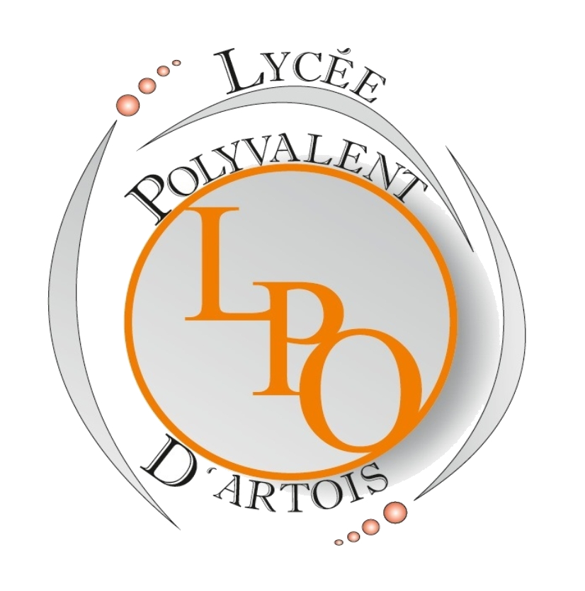

Suivant mon parcours Universitaire en Alternance, je travaille chez Vallourec en tant que Support technique
2022
Actuellement en 2eme année de BUT informatique à l'IUT de Lille
2021

Entre 2018 et 2021, j'étais au Lycée Polyvalant d'Artois avec les spécialités Maths et NSI